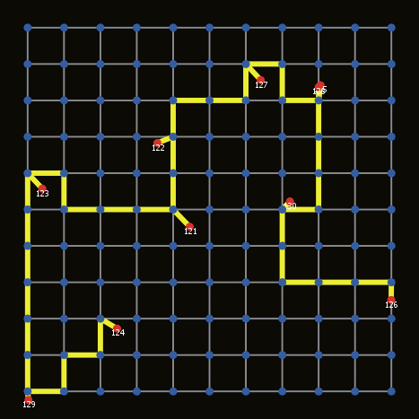

NetLogo JEDI Training Session #1
March 30th 2017Paul Chapron - Sebastien Rey-Coyrehourcq
Outline
- What is Netlogo ?
- A world of Agents
- Patches
- Turtles
- Networks
- Interactions
- Inputs / Outputs
- Extensions
What is NetLogo ?
- A programming language
- A toolkit
- An Integrated Development Environment
for Agent Based Models (ABM)
Most of content comes from https://subversion.american.edu/aisaac/notes/netlogo-basics.xhtml
ABM
- Entities
- Environment
- Interactions

You tell entities what to do and see what happens.
ABM
- Entities
- Environment
- Interactions
You describe how entities interact in and with their environment, and observe the resulting phenomena.
ABM
- Entities
- Environment
- Interactions
You program the behavior of software "agents", all operating independently.
It allows to explore the connection between the micro-level behavior of individuals and the macro-level patterns that emerge from their interaction.
Netlogo is good for you
- Suited for modeling complex systems
- Simplicity of use
- Simplicity of language
- Clear extensive documentation
- Bundled with a lot of models
- Multi-platforms
Various environments for agents


sources : giphy.com , google images and http://www.cs.us.es/~fsancho/?e=137
A World of Agents
Pretty much everything is agent
- Turtles: Mobile Agents
- Patches: Discrete surface units of the World, location of turtles
- Links: Edges of a graph connecting turtles
- The Observer: the meta-agent that rules the world or Netlogo
Building a model
is defining
- the world characteristics (e.g. size)
- Global variables (e.g. temperature)
- Agents (turtles) variables (e.g. age)
- the behavior of turtles
- Inputs (e.g. parameters)
- Outputs (e.g. monitors)
Netlogo GUI
- GUI Panel
- Info Panel
- Code Panel
First steps
Open an existing model and play around with it
OR
Create the first model from scratch
?
Existing models
- File -> Models Library. Pick one.
- Mess with buttons, sliders & observe consequences on behavior
- Look at the Info Tab
- Look at The Code
- Fire
- Mousetraps
- Wolf Sheep Predation
- Life
- Fireworks
- Flocking
- Moths
- Preferential Attachment
- Sunflower
- Game of Life
- Patch Clusters Example
- Bounce Example
- Hatch Example
- Network Example
Model from scratch
- create some turtles, and name the procedure setup
to setup clear-all create-turtles 20 end
Notice the colors in the code:
greenish for reserved keywords ()
blue for commands
violet for everything built-in : agents default variables, functions, agentsets
orange for values
grey for comments
Black is for the name of things you declare : variables , procedures
Une réponse:
Testons toutes les valeurs que peuvent prendre chacun des paramètres et générons ainsi tous les scénarios possibles !

Tous les scénarios ... ?


Une meilleure réponse?
Testons moins de valeurs pour chaque paramètre, ça ira plus vite !
Limitations de l'exploration systématique

Une autre approche

Pattern Search Exploration


Objections
65 ans de calcul, c'est encore très long !
Ça ne marchera jamais avec mon modèle !


Un aperçu d'OpenMOLE

Scénario 1 : Une cour intérieure
Scénario 2 : Des allées